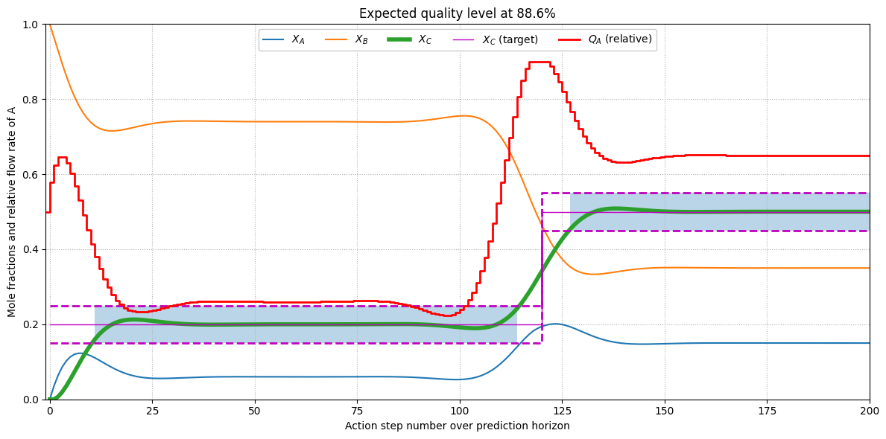

Refactoring#
Import tools#
%matplotlib inline
from casadi import SX
from casadi import Function
from casadi import nlpsol
from casadi import vertcat
import numpy as np
import matplotlib.pyplot as plt
Build system of equations#
x = SX.sym("x", 3)
x
SX([x_0, x_1, x_2])
ndot_tot = SX.sym("ndot_tot")
ndot = SX.sym("ndot", 3)
ndot[1] = ndot_tot - ndot[0]
ndot[2] = 0
ndot
SX([ndot_0, (ndot_tot-ndot_0), 0])
k = SX.sym("k")
rate = k * x[0]
rate
SX((k*x_0))
ndot_gen = vertcat(-rate, 0.0, rate)
ndot_gen
SX(@1=(k*x_0), [(-@1), 0, @1])
n_tot = SX.sym("n_tot")
xdot = (ndot - ndot_tot * x + ndot_gen) / n_tot
xdot
SX(@1=(k*x_0), [(((ndot_0-(ndot_tot*x_0))-@1)/n_tot), (((ndot_tot-ndot_0)-(ndot_tot*x_1))/n_tot), ((@1-(ndot_tot*x_2))/n_tot)])
F_xdot = Function("F_xdot", [x, ndot[0], ndot_tot, n_tot, k], [xdot])
F_xdot
Function(F_xdot:(i0[3],i1,i2,i3,i4)->(o0[3]) SXFunction)
F_xdot([0.5, 0.5, 0.0], 10.0, 3.0, 1000.0, 10.0)
DM([0.0035, -0.0085, 0.005])
F_xdot(x, ndot[0], ndot_tot, n_tot, k * x[1])
SX(@1=((k*x_1)*x_0), [(((ndot_0-(ndot_tot*x_0))-@1)/n_tot), (((ndot_tot-ndot_0)-(ndot_tot*x_1))/n_tot), ((@1-(ndot_tot*x_2))/n_tot)])
Provide parameters#
Np = 200
tau = 10.0
Q = 1.0
R = 0.1
S = 100.0
k_num = 10.0
n_tot_num = 500.0
ndot_tot_num = 3.0
ndot0_max = 0.9 * ndot_tot_num
ndot0_ini = 0.5 * ndot_tot_num
pars_fixed = [ndot_tot_num, n_tot_num, k_num]
Integrate symbolically#
def step(xn, pn):
return F_xdot(xn, pn, *pars_fixed)
def integrate(xn, pn):
return xn + tau * step(xn, pn)
integrate(x, ndot0_ini)
SX(@1=10, @2=1.5, @3=3, @4=(@1*x_0), @5=500, [(x_0+(@1*(((@2-(@3*x_0))-@4)/@5))), (x_1+(@1*((@2-(@3*x_1))/@5))), (x_2+(@1*((@4-(@3*x_2))/@5)))])
J = 0.0
g = []
xs2 = SX.sym("xs2", Np+1)
lbx = []
ubx = []
v_ndot0 = []
xn = x
for ts in range(Np):
v_ndot0_ts = SX.sym(f"v_ndot0_{ts}")
v_ndot0.append(v_ndot0_ts)
lbx.append(0.0)
ubx.append(ndot0_max)
xn = integrate(xn, v_ndot0_ts)
v_prev = ndot0_ini if ts == 0 else v_ndot0[ts-1]
scale_error = xn[2] - xs2[ts]
scale_change = v_prev - v_ndot0_ts
cost_error = Q * pow(scale_error, 2)
cost_change = R * pow(scale_change, 2)
J += cost_error + cost_change
J += S * pow(xn[2] - xs2[-1], 2)
Optimize controls#
nlp = {
"f": J,
"x": vertcat(*v_ndot0),
"g": vertcat(*g),
"p": vertcat(xs2, x)
}
solver = nlpsol("solver", "ipopt", nlp)
solver
Function(solver:(x0[200],p[204],lbx[200],ubx[200],lbg[0],ubg[0],lam_x0[200],lam_g0[0])->(x[200],f,g[0],lam_x[200],lam_g[0],lam_p[204]) IpoptInterface)
xs2_num = np.zeros(Np+1)
xs2_num[:3*Np//5] = 0.2
xs2_num[3*Np//5:] = 0.5
x0_num = [0.0, 1.0, 0.0]
p = [*xs2_num, *x0_num]
solution = solver(x0=np.ones(Np), p=p, lbx=lbx, ubx=ubx, lbg=0.0, ubg=0.0)
******************************************************************************
This program contains Ipopt, a library for large-scale nonlinear optimization.
Ipopt is released as open source code under the Eclipse Public License (EPL).
For more information visit https://github.com/coin-or/Ipopt
******************************************************************************
This is Ipopt version 3.14.11, running with linear solver MUMPS 5.4.1.
Number of nonzeros in equality constraint Jacobian...: 0
Number of nonzeros in inequality constraint Jacobian.: 0
Number of nonzeros in Lagrangian Hessian.............: 19902
Total number of variables............................: 200
variables with only lower bounds: 0
variables with lower and upper bounds: 200
variables with only upper bounds: 0
Total number of equality constraints.................: 0
Total number of inequality constraints...............: 0
inequality constraints with only lower bounds: 0
inequality constraints with lower and upper bounds: 0
inequality constraints with only upper bounds: 0
iter objective inf_pr inf_du lg(mu) ||d|| lg(rg) alpha_du alpha_pr ls
0 1.1258206e+01 0.00e+00 5.43e-01 -1.0 0.00e+00 - 0.00e+00 0.00e+00 0
1 7.8092583e+00 0.00e+00 7.04e-02 -1.0 2.90e-01 - 8.32e-01 1.00e+00f 1
2 2.8059021e+00 0.00e+00 2.75e-02 -1.7 6.10e-01 - 8.56e-01 1.00e+00f 1
3 7.9735197e-01 0.00e+00 2.56e-02 -2.5 5.86e-01 - 8.30e-01 1.00e+00f 1
4 4.6957248e-01 0.00e+00 1.68e-16 -2.5 3.47e-01 - 1.00e+00 1.00e+00f 1
5 4.0610971e-01 0.00e+00 5.07e-04 -3.8 2.30e-01 - 9.51e-01 1.00e+00f 1
6 3.9418705e-01 0.00e+00 4.22e-16 -3.8 1.36e-01 - 1.00e+00 1.00e+00f 1
7 3.9075820e-01 0.00e+00 7.22e-05 -5.7 7.49e-02 - 9.74e-01 1.00e+00f 1
8 3.9027053e-01 0.00e+00 3.03e-04 -5.7 2.86e-02 - 1.00e+00 8.39e-01f 1
9 3.9017046e-01 0.00e+00 1.22e-06 -5.7 1.36e-02 - 1.00e+00 9.99e-01f 1
iter objective inf_pr inf_du lg(mu) ||d|| lg(rg) alpha_du alpha_pr ls
10 3.9015880e-01 0.00e+00 5.91e-05 -8.6 4.00e-03 - 1.00e+00 9.35e-01f 1
11 3.9015679e-01 0.00e+00 1.19e-16 -8.6 1.96e-03 - 1.00e+00 1.00e+00f 1
12 3.9015656e-01 0.00e+00 2.06e-16 -8.6 8.68e-04 - 1.00e+00 1.00e+00f 1
13 3.9015654e-01 0.00e+00 1.47e-16 -8.6 3.48e-04 - 1.00e+00 1.00e+00f 1
14 3.9015653e-01 0.00e+00 1.66e-16 -8.6 8.04e-05 - 1.00e+00 1.00e+00f 1
Number of Iterations....: 14
(scaled) (unscaled)
Objective...............: 3.9015653462196181e-01 3.9015653462196181e-01
Dual infeasibility......: 1.6593394627301955e-16 1.6593394627301955e-16
Constraint violation....: 0.0000000000000000e+00 0.0000000000000000e+00
Variable bound violation: 0.0000000000000000e+00 0.0000000000000000e+00
Complementarity.........: 4.1114517841593586e-09 4.1114517841593586e-09
Overall NLP error.......: 4.1114517841593586e-09 4.1114517841593586e-09
Number of objective function evaluations = 15
Number of objective gradient evaluations = 15
Number of equality constraint evaluations = 0
Number of inequality constraint evaluations = 0
Number of equality constraint Jacobian evaluations = 0
Number of inequality constraint Jacobian evaluations = 0
Number of Lagrangian Hessian evaluations = 14
Total seconds in IPOPT = 0.045
EXIT: Optimal Solution Found.
solver : t_proc (avg) t_wall (avg) n_eval
nlp_f | 0 ( 0) 178.00us ( 11.87us) 15
nlp_grad_f | 6.00ms (375.00us) 286.00us ( 17.87us) 16
nlp_hess_l | 17.00ms ( 1.21ms) 13.93ms (994.71us) 14
total | 40.00ms ( 40.00ms) 45.58ms ( 45.58ms) 1
Post-processing#
ndot0_opt = solution["x"].full().ravel()
xt = np.zeros((Np+1, 3))
xt[0, :] = x0_num
xn = xt[0]
for ts in range(1, Np+1):
xn = integrate(xn, ndot0_opt[ts-1])
xt[ts] = xn.full().ravel()
xs2_max = np.clip(xs2_num + 0.05, 0.0, 1.0)
xs2_min = np.clip(xs2_num - 0.05, 0.0, 1.0)
good = (xt[:, 2] >= xs2_min) & (xt[:, 2] <= xs2_max)
steps = list(range(Np+1))
quality = 100 * sum(good.astype("u8")) / len(good)
cmd = list(ndot0_opt / ndot_tot_num)
cmd.append(cmd[-1])
plt.style.use("default")
fig = plt.figure(figsize=(12, 6))
plt.grid(linestyle=":")
plt.plot(steps, xt[:, 0], label="$X_A$")
plt.plot(steps, xt[:, 1], label="$X_B$")
plt.plot(steps, xt[:, 2], lw=4, label="$X_C$")
plt.step(steps, xs2_max, "m--", lw=2, label="_none_", where="post")
plt.step(steps, xs2_min, "m--", lw=2, label="_none_", where="post")
plt.step(steps, xs2_num, "m-", lw=1, label="$X_C$ (target)", where="post")
# Add *negative time* with initial flow rate.
plt.step([-1, *steps], [ndot0_ini/ ndot_tot_num, *cmd], "r", lw=2,
label="$Q_A$ (relative)", where="post")
plt.fill_between(steps, xs2_min, xs2_max, where=good, alpha=0.3)
plt.title(f"Expected quality level at {quality:.1f}%")
plt.ylabel("Mole fractions and relative flow rate of A")
plt.xlabel("Action step number over prediction horizon")
plt.legend(loc="upper center", fancybox=True, framealpha=1.0, ncol=6)
plt.xlim(-1, Np)
plt.ylim(0, 1)
plt.tight_layout()
